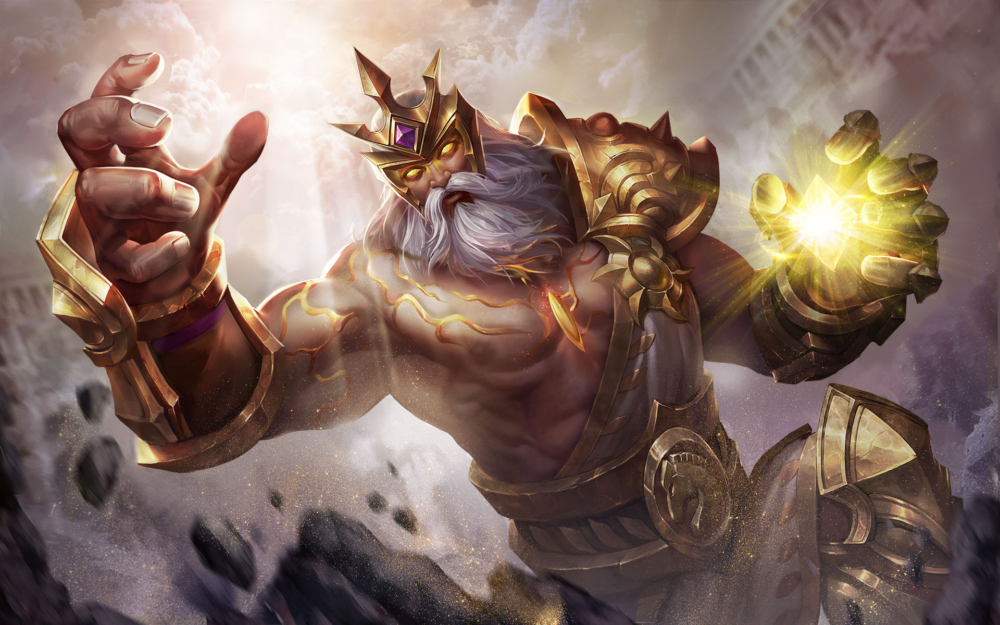

GILDUR
Tiểu sử
"Câu trả lời của vàng liệu có mua được tất cả là gì? Mua lũ đặt câu hỏi!"
Gildur đã từng là một nhà quý tộc giàu nứt đố đổ vách. Gần như mọi ngóc ngách của cả lục địa đều có liên quan đến sản nghiệp của hắn. Bất cứ nơi đâu dính liếu đến tiền bạc, đều sẽ có dính líu đến Gildur. Nói không ngoa thì huy hiệu của hắn đôi khi có hiệu lực hơn cả mệnh lệnh của nhà vua. Ấy thế nên chẳng ai lấy làm lại khi hắn được người đời trao cho biệt danh "Vua hoàng kim".
Thật trớ trêu khi đời sống vật chất càng sung túc bao nhiêu, thì thế giới tinh thần của Gildur càng trống rỗng vô vị bấy nhiêu. Hắn cố khiến bản thân chìm đắm trong nữ sắc và những cơn say vô tận, nhưng vô dụng. Đúng lúc này Gildur được biết đến giáo lý "thanh tẩy linh hồn, cứu rỗi thế gian" của Cung điện ánh sáng.
Thế giới tâm linh của Gildur nhanh chóng được khỏa lấp khi hắn tham gia Cung điện ánh sáng. Dẫu vậy với kinh nghiệm lõi đời của mình, Gildur thừa biết thứ tín ngưỡng cuồng nhiệt này về bản chất cũng không khác những thứ hắn đã từng trải nghiệm là bao. Thứ hắn thấy thậm chí còn vươn xa hơn thế, đó là những cơ hội để truy đuổi quyền lực một cách danh chính ngôn thuận nếu hắn vận dụng được những lợi thế của bản thân để leo cao hơn trên nấc thang uy quyền của Cung điện.
Rất nhanh chóng, Gildur đã thành công và trở thành một trong những "tín đồ" quan trọng và quyền lực bậc nhất không chỉ của Cung điện, mà là của cả lục địa!
“Tâm hồn trống rỗng của ta chỉ có thể được khỏa lấp bằng... quyền lực!"
Gildur đã từng là một nhà quý tộc giàu nứt đố đổ vách. Gần như mọi ngóc ngách của cả lục địa đều có liên quan đến sản nghiệp của hắn. Bất cứ nơi đâu dính liếu đến tiền bạc, đều sẽ có dính líu đến Gildur. Nói không ngoa thì huy hiệu của hắn đôi khi có hiệu lực hơn cả mệnh lệnh của nhà vua. Ấy thế nên chẳng ai lấy làm lại khi hắn được người đời trao cho biệt danh "Vua hoàng kim".
Thật trớ trêu khi đời sống vật chất càng sung túc bao nhiêu, thì thế giới tinh thần của Gildur càng trống rỗng vô vị bấy nhiêu. Hắn cố khiến bản thân chìm đắm trong nữ sắc và những cơn say vô tận, nhưng vô dụng. Đúng lúc này Gildur được biết đến giáo lý "thanh tẩy linh hồn, cứu rỗi thế gian" của Cung điện ánh sáng.
Thế giới tâm linh của Gildur nhanh chóng được khỏa lấp khi hắn tham gia Cung điện ánh sáng. Dẫu vậy với kinh nghiệm lõi đời của mình, Gildur thừa biết thứ tín ngưỡng cuồng nhiệt này về bản chất cũng không khác những thứ hắn đã từng trải nghiệm là bao. Thứ hắn thấy thậm chí còn vươn xa hơn thế, đó là những cơ hội để truy đuổi quyền lực một cách danh chính ngôn thuận nếu hắn vận dụng được những lợi thế của bản thân để leo cao hơn trên nấc thang uy quyền của Cung điện.
Rất nhanh chóng, Gildur đã thành công và trở thành một trong những "tín đồ" quan trọng và quyền lực bậc nhất không chỉ của Cung điện, mà là của cả lục địa!
“Tâm hồn trống rỗng của ta chỉ có thể được khỏa lấp bằng... quyền lực!"
CÔNG TY CỔ PHẦN GIẢI TRÍ VÀ THỂ THAO ĐIỆN TỬ VIỆT NAM
Văn phòng đại diện: Tầng 29, tòa nhà Trung tâm Lotte Hà Nội, số 54, đường Liễu Giai, Phường Cống Vị, Quận Ba Đình,
Thành phố Hà Nội, Việt Nam
Điện thoại: (04)7305-3939 | Fax: (04)3759-2429